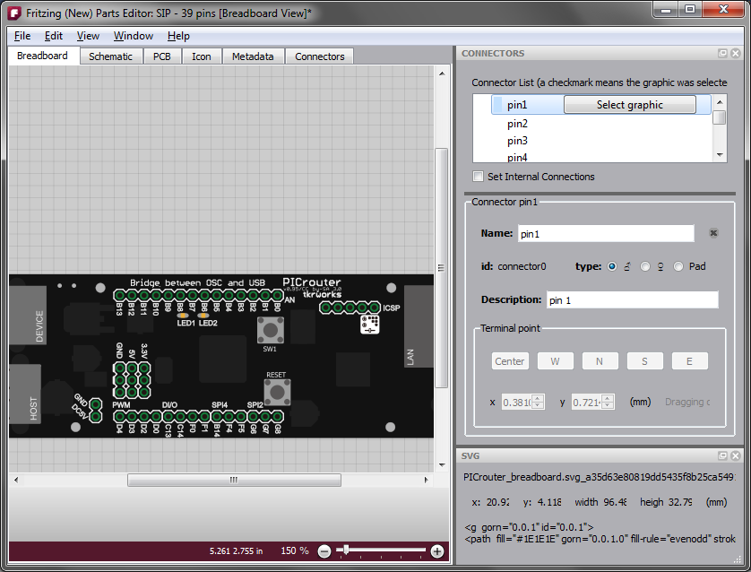
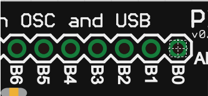
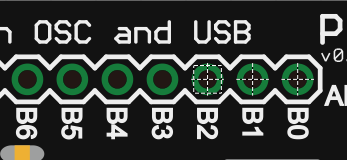

We have decided to release the new Parts Editor in two phases. The first phase, included in this release, is already more powerful and easy to use than the old Parts Editor but you still need to do a lot of preliminary work using an external SVG editor like Inkscape, Illustrator, or CorelDRAW. In the next phase we hope to eliminate much of this requirement.
How to start
The new approach is very different from that of the old Parts Editor, and explaining the difference is the purpose of this document. The first big change is that you cannot create a new part from scratch--you must start with a part that already exists. So the best thing to do is to find a part that is pretty close to what you eventually want. If your part is really different from anything else, then just to try to match the number of connectors. For example, if your part needs 39 pins, then start with a generic IC part, change it to a SIP (single inline package) and give it 39 pins. Though finding a part to begin with may seem like a burden, it will save you some tedious work.
You can open the new parts editor by right-clicking a part in a sketch; choosing 'Edit' from the Part menu; right clicking a part in the Parts Bin; or using the Parts Bin drop down menu.
Six views
The new Parts Editor no longer tries to display everything in a single view. Instead, it works like the sketch window where there are multiple tabs, but only one tab is visible at a time. In the new Parts Editor there are six tabs: Breadboard view, Schematic view, PCB view, Icon view, Metadata view, and Connectors view. As you might expect, the first four views are for the part images; the Metadata view is where you enter the part's title, author, and other properties; and the Connectors view is for the connector metadata--but you can also use it to add and remove connectors.
SVG prep; other filetypes
To load the SVGs for your part, go to the appropriate view, and use File > Open. As before, you can load SVGs, gEDA .fp (footprint) files, KICAD .mod files (also for footprints). You can also still load PNG or JPG images, but we discourage this because these images are raster-based, rather than vector-based, so they don't look good when scaled.
Since you have already begun with a part, it may be that you will only have to load an image for a particular view--you do not have to replace all the images from the original.
It is still necessary to prepare SVGs for PCB view by grouping elements in layers: copper0, silkscreen, copper1, etc. (Layering will be handled inside the phase 2 parts editor.) The best way to understand the layers is to open up one of the core pcb svg files, For example have a look at the file crystal_hc49U.svg:
<?xml version="1.0" encoding="UTF-8"?>
<svg baseProfile="tiny" height="0.20306in" version="1.2" viewBox="0 0 46684 20306" width="0.46684in" xmlns="http://www.w3.org/2000/svg">
<desc>Fritzing footprint SVG</desc></svg>
<g id="silkscreen">
<line stroke="white" stroke-width="1000" x1="1000" x2="45684" y1="1000" y2="1000"/></g>
<line stroke="white" stroke-width="1000" x1="45684" x2="45684" y1="1000" y2="19306"/>
<line stroke="white" stroke-width="1000" x1="45684" x2="1000" y1="19306" y2="19306"/>
<line stroke="white" stroke-width="1000" x1="1000" x2="1000" y1="19306" y2="1000"/>
<g id="copper1"><g id="copper0">
<circle cx="13736" cy="10153" fill="none" id="connector0pin" r="2750" stroke="rgb(255, 191, 0)" stroke-width="2000"/></g></g>
<circle cx="32948" cy="10153" fill="none" id="connector1pin" r="2750" stroke="rgb(255, 191, 0)" stroke-width="2000"/>
Save and undo
The next big differences from the old Parts Editor are that you can save your changes at any point and keep working, and undo is always available, even for unloading (and reloading) view images.
Associating a connector to its SVG counterpart
The next task will be to associate each pin with its counterpart in the SVG for a given view. This is handled very differently from before. For an example, I am going to use images from a part created by Shunichi Yamamoto (who graciously gave us permission to include them in this tutorial, and who also helped beta test the new Parts Editor).
The new part has 39 pins, so we begin with a Generic IC part and drag it into an empty sketch. There we use the Inspector to change it a to SIP and give it 39 pins. Then we open that in the new Parts Editor with a right-click.
Next we load the new breadboard image using File > Open. In the Tools widget at the upper right, you see a list of connectors. Choose one to make it the current or active connector. If it has already been associated with an SVG element, that element will display a marquee highlight. Since we are just starting out, we will choose pin1 which is not currently associated with any SVG element.

To do the actual association click the "Select connector graphic" button. This basically puts you in a "mode" that lasts until the next time you mouse down. If you want to escape the mode, click anywhere outside the part or use the escape key. You can only make the association when you are in this mode (this keeps you from accidentally reassociating a pin later). Now move your mouse over the SVG. As you do so, various elements will highlight. It is most likely the case that any given mouse location could refer to multiple SVG elements (or groups). Use the mouse wheel to highlight other elements above or below the currently highlighted one in the z-order. Here are three highlights from the same mouse position, using the mouse wheel:

The first highlight is the one we want so we mouse down when the wheel gets us back to that small rectangle. Now the element has a marquee to show that it is the current pin, and you also see the terminal point as a crosshair which defaults to the center. The terminal point is the place where a wire attaches to the connector.

After associating pin2 and pin3 we have:

In PCB and Breadboard view the terminal point is usually the center of the connector so you don't have to do any thing else. But in schematic view the terminal point is usually near the end of the connector. To adjust the terminal point, uncheck the "Connector SVG Lock" checkbox in the Tools widget. Now you can use the spinners in the Tool view to adjust the terminal point, or you can just click in the middle of the cross-hair and drag the terminal point to where you want it to go. Here is an example from schematic view:

Once you are happy with the terminal point location you can check the SVG Connector Locked checkbox. This will keep you from clicking on something you didn't mean to.
-- the undo implementation is working, so if you make an error, you can undo it.
Buses <TBD>
clicking on a sketch part will be updated
show in folder
what happens when you save (part is updated, myparts bin)